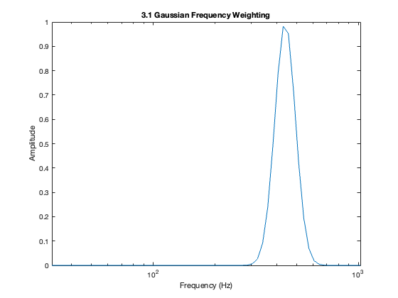
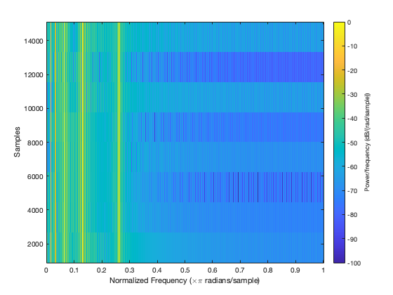

clc; clear; close all; % Prelab Lab P-6 % 2.1 Setting up the Midi to Frequency vector % Midi is a protocol that standardized the compatibility of digital musical % instruments. In this lab, we will be using the Midi framework to map the % midi key range (0 to 127) to the frequency range of equal-temper tuning. % A-440 is the standard tuning framework, which specifies that A4, the midi % note 49 corresponds to the frequency 440 Hz. With the given ratio of % 2^1/12, we know that the frequency of midi note 49 should equal % 440 * 2^(0/12) = 440, so our equation for tuning should be as follows: midi_index = 0:127; midi_to_frequency = 440 * 2.^((midi_index - 48) / 12); % 2.2 Gaussian Forms % The Gaussian Window can be used in many applications in music technology. % In this pre-lab, the gaussian is used as an amplitude envelope (the % change in signal volume of a played note over time) and later as a % bandpass filter. The bell-curve is a good use case for both of these % applications, as for an amplitude envelope it creates a clearly % observable attack (the increase in volume from the incidence of a note) % and decay (the decrease in note volume from its peak loudness), and is % effective at demonstrating the effects of a band-pass filter on notes % across different octaves. Below is a visualization of a gaussian window g % with mu = 1, a = 10, and o=3 across a range (v) of -10 to 10 v = -10:0.1:10; g = 10 * exp(-(v-1).^2 / (2 * (3^2))); figure(1) plot(v,g) title('2.2 Gaussian Window') ylabel('Amplitude') xlabel('mu = 1, a = 10, o = 3')
% Functionally, the gaussian has three controllable parameters for our % purposes. Alpha controls the amplitude of the gaussian window, mu controls % the window position of the gaussian, and sigma controls the width of the % window. % Pre-Lab P-6: Warm Up % 3.1 Gaussian Weighting % In this particular application of gaussian weighting to musical % synthesis, (the wording of the lab suggests that frequency amplitude % weighting is the only application gaussian weighting has in musical % synthesis when it is most certainly not) we are going to use a gaussian % to weight the amplitude of signals depending on their frequency. The % amplitude of the signal will be dependent on the proximity of the % signal's frequency to the center frequency (mu) of the gaussian window, % and will decrease in amplitude the further afield they are up to six % octaves above and below 440 Hz (A4). All frequencies above and below that % bandwidth will be cut. Because this is based upon octaves, the % distribution of the bandwidth will need to be logarithmic, as note % frequencies increase exponentially with each octave. ff = 2 .^(5:1/12:10); function W = gauss_freq(v, mu, o) W = exp(-((log2(v) - log2(mu)).^2) / (2 * o^2)); end o = 2^1/12; g = gauss_freq(ff,440, o); figure(2) semilogx(ff, g) title('3.1 Gaussian Frequency Weighting') xlabel('Frequency (Hz)') ylabel('Amplitude') % 3.2 Synthesize Octaves with Gaussian Weighting % We are asked to import a function from a previous lab called "key2note.m" % We have made a couple of changes to the function, such as allowing for a % specific sampling frequency and adding in midi to frequency mapping. Here % is an example of it in use: fs = 8000; % <= Set Sample Frequency to 8000 Hz % *!*!*!* only play one sound at a time! *!*!*!* % sound(key2note(0.8, 40, 2, fs), fs) % <= Uncomment this to demo
% In this pre-lab, we are asked to generate five notes, octaves of C and C2, % C3, C4, C5, and C6, with a note length of 2 seconds and sampling % frequency of 8000 Hz. An octave is 12 notes above or below a note, so we % can generate C2, C3, C5 and C6 by adding 12s to the value of C4 = 40. % We are then asked to combine those signals, and use a gaussian centered % at 440 Hz with a width of one octave to filter them. fs = 8000; s = 2; C4 = key2note(1, 40, 2, fs); C3 = key2note(1, 40-12, 2, fs); C2 = key2note(1, 40-24, 2, fs); C5 = key2note(1, 40+12, 2, fs); C6 = key2note(1, 40+24, 2, fs); % We will be filtering using the fourier transform, so we can simply add % all the notes together before applying the gaussian. We can apply the % gaussian as a filter by taking the fourier transform of the combined % waveform and multiplying it by the gaussian window, then inverting the % fourier transform of the product should give us the filtered waveform. combined_waveform = C2 + C3 + C4 + C5 + C6; % We will not sound demo the combined waveform because it is too loud and % could damage our computers. N = length(combined_waveform); f_c_filter = 440; o = 1; ff = linspace(0, fs, N); W = gauss_freq(ff, f_c_filter, o); figure(3) semilogx(ff, W) title('3.2 Gaussian Band-Pass Filter') xlabel('Frequency (Hz)') ylabel('Amplitude') combined_ft = fft(combined_waveform); filtered_ft = combined_ft .* W; filtered_waveform = real(ifft(filtered_ft)); % *!*!*!* only play one sound at a time! *!*!*!* % sound(filtered_waveform, 8000) %<= Uncomment this to demo figure(4) spectrogram(filtered_waveform) clim([-100, 0]) % Additional experiment with amplitude envelope to protect my computer from % harm v = 0:(2/(N-1)):2; g = 1 * exp(-(v-1).^2 / (2 * (0.2^2))); g = 0.1 * g; figure(5) plot(v, g) title('Amplitude Envelope') xlabel('time (s)') ylabel('Amplitude') C4 = key2note(g, 40, 2, fs); C3 = key2note(g, 40-12, 2, fs); C2 = key2note(g, 40-24, 2, fs); C5 = key2note(g, 40+12, 2, fs); C6 = key2note(g, 40+24, 2, fs); combined_waveform = C2 + C3 + C4 + C5 + C6; combined_ft = fft(combined_waveform); filtered_ft = combined_ft .* W; filtered_waveform = real(ifft(filtered_ft)); % *!*!*!* only play one sound at a time! *!*!*!* % sound(combined_waveform, 8000) %<= Uncomment this to demo figure(6) spectrogram(combined_waveform) clim([-100, 0])